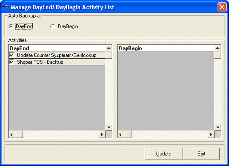

Various activities can be included as part of DayEnd (CLOSE Day) and DayBegin (OPEN Day) processes. This option is used to move the daily backup activity from the list of activities during DayEnd to DayBegin and vice-versa. It also ensures that the daily backup activity is never skipped. Therefore, if backup is included as part of DayBegin and CLOSE Day is executed, then you cannot move the backup to DayEnd before you perform OPEN Day.
How to reach: Setup > Supervisory Functions > Manage DayEnd/ DayBegin Activity List
The Manage DayEnd/ DayBegin Activity List window is displayed.

Auto Backup at:
DayEnd: Select to include the daily backup activity as part of the CLOSE Day process. By default the daily backup activity is part of DayEnd.
DayBegin: Select to include the daily backup activity as part of the OPEN Day process.
Activities:
DayEnd: Displays a list of activities included as part of the CLOSE Day process.
DayBegin: Displays a list of activities included as part of the OPEN Day process.
Once you move the backup activity from DayEnd to DayBegin or vice-versa, the list will be updated to reflect the latest status.